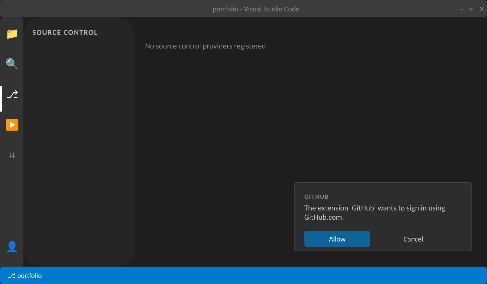
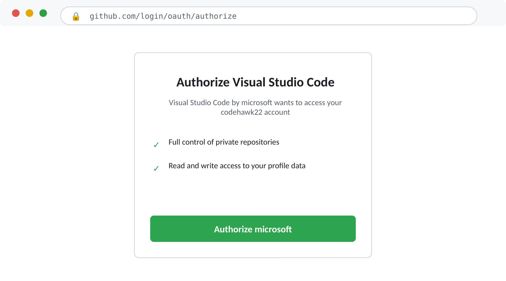
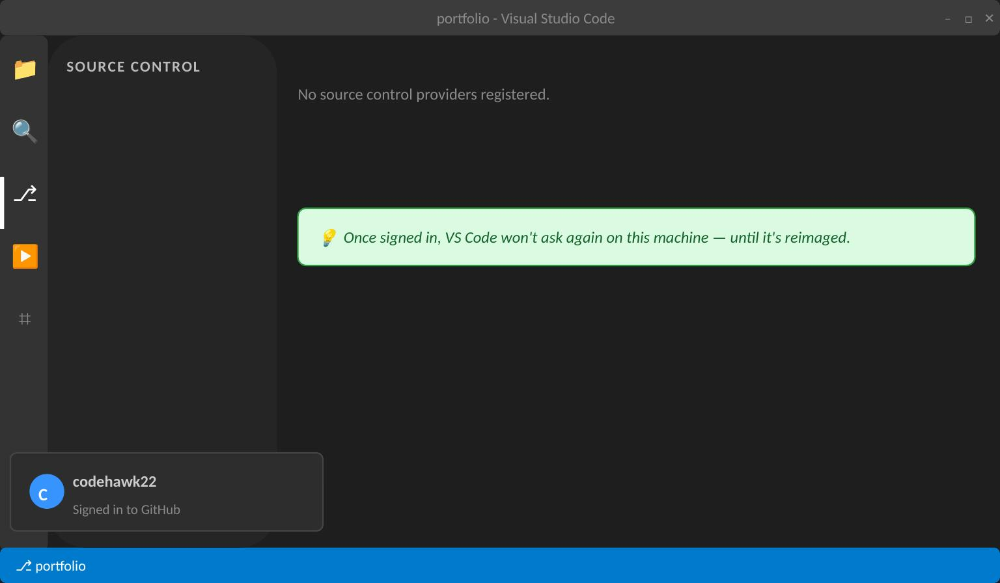
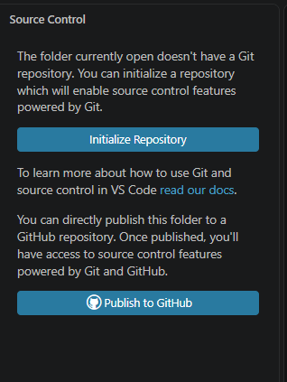
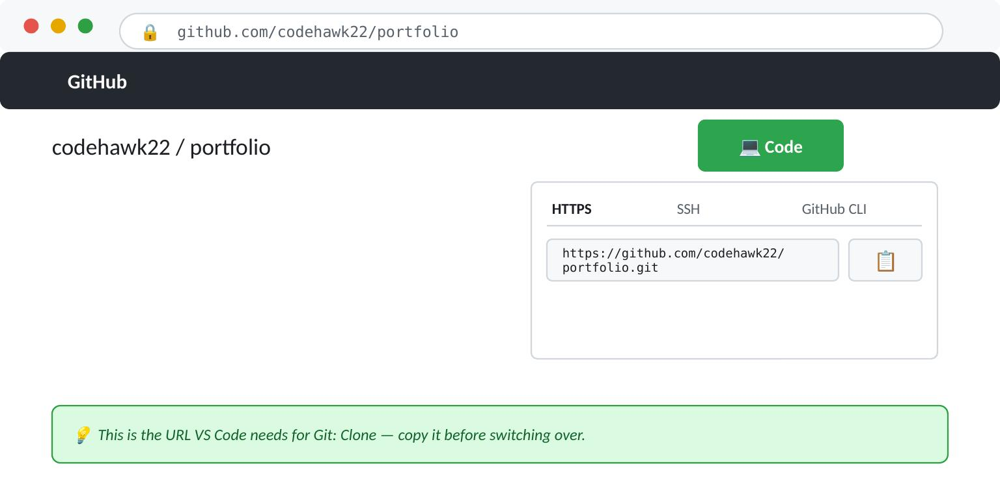
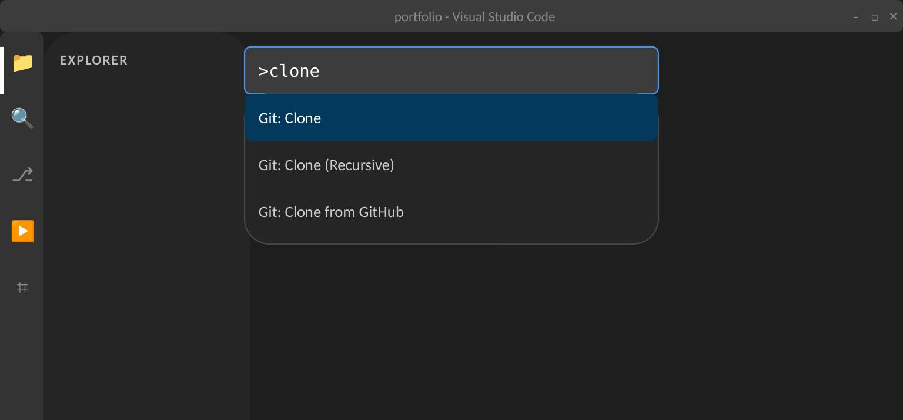
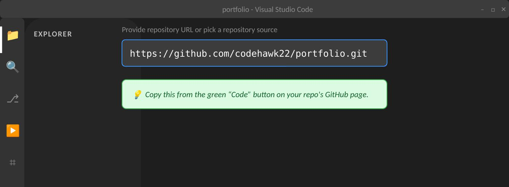
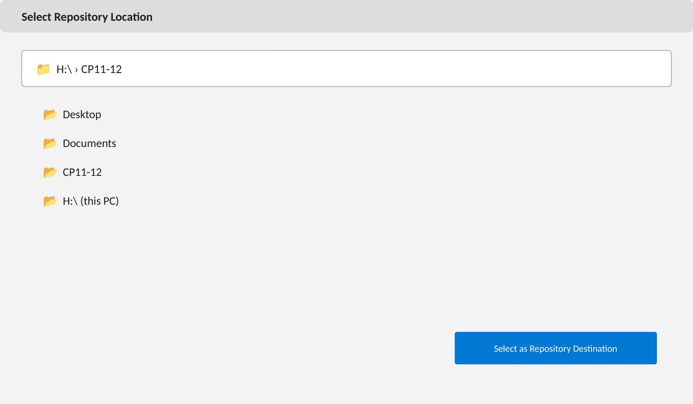
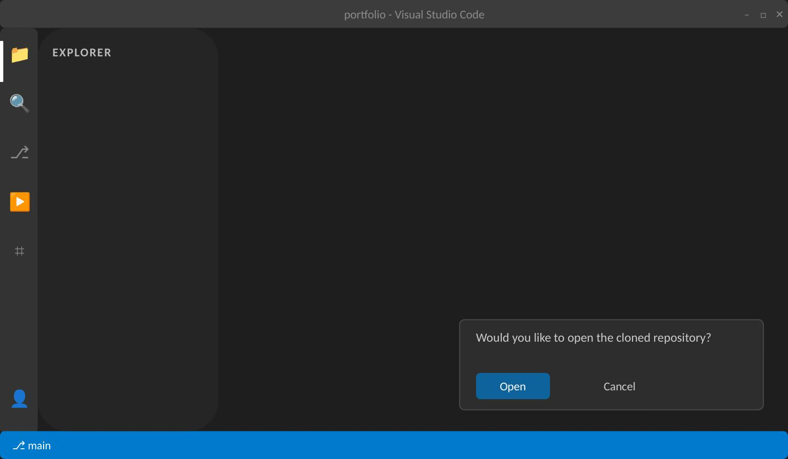
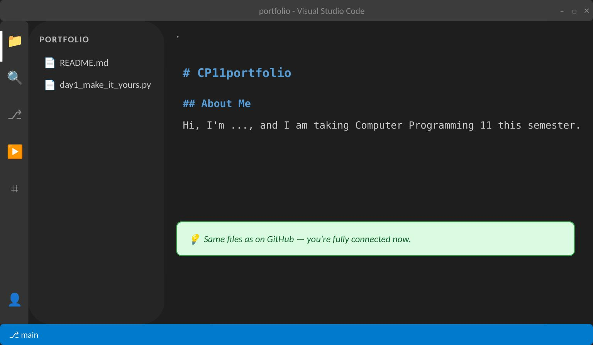

Local Git Workflow
So far, every edit has happened directly in the browser on GitHub.com. That's fine for quick changes, but real project work happens in an editor — today connects the two, and this becomes your daily habit for the rest of the semester.
Go at your own speed. If you already know this, move fast — you can help a neighbour once you're done. If any step doesn't make sense, put a hand up.
Part A — Sign In to GitHub from VS Code
This is a one-time setup — once it's done on a machine, VS Code won't ask again until the machine is reimaged.
Step 1: Allow VS Code to sign in
The first time you try to sync with GitHub, VS Code shows a notification asking to sign in. Click Allow.

Step 2: Authorize in your browser
A browser window opens on GitHub's site, asking you to authorize Visual Studio Code. Review the permissions and click Authorize.

Step 3: You're connected
Back in VS Code, the account icon in the bottom-left now shows you're signed in. That's it — done for the rest of the semester.

Since lab machines get wiped periodically, this sign-in may need to be repeated later in the semester — same idea as the Python extension reinstall from Day 1.
Before You Clone — Avoid This Trap
If you open VS Code on a folder that already has files in it (like your 0.1 course folder) and check the Source Control panel, you'll see this instead of your repo:

That means the folder isn't actually connected to GitHub — it's just a plain folder. Don't click either button here. The fix is Part B below: clone into a brand new folder instead of reusing an old one.
Part B — Clone Your Repo
Step 4: Copy your repo's URL
On GitHub, open your portfolio repo and click the green Code button. Under the HTTPS tab, click the copy icon next to the URL.

Step 5: Open the Command Palette and run Git: Clone
In VS Code, press Ctrl+Shift+P, type "clone", and select Git: Clone from the list.

Step 6: Paste your repo's URL
Paste the URL you copied in Step 4 and press Enter.

Step 7: Choose where to save it
Pick a location on your H: drive — this is where the cloned copy will live.

Step 8: Open the cloned repository
VS Code asks if you'd like to open what was just cloned. Click Open.

Step 9: Confirm your files are there
Your README and 0.1 script should already be sitting in the file explorer — exactly as they appear on GitHub. You're fully connected.

The Source Control Panel
Open the panel using the branch icon in the sidebar, or Ctrl+Shift+G.
Step 1: See your changes
Make a change to a file in your repo — changed files show up automatically in the Source Control panel.
Step 2: Stage and commit
Click the + next to a file to stage it, type a commit message in the box at the top, then click the checkmark to commit.
Step 3: Sync
Click Sync Changes — this pushes your commit up to GitHub, and pulls down anything new, in one action.
Heads up — the "stage and commit directly" prompt: if you click the checkmark without staging anything first, VS Code asks if you'd like to automatically stage all your changes and commit them directly. Saying yes skips the staging step entirely and commits everything at once — convenient, but it means you don't get a chance to check exactly what's going into the commit. For this course, stage on purpose with the + button so you know what each commit contains.
Practice: Commit & Sync Loop
Not graded — just a rep, so the loop actually sticks.
- Add a new file locally (e.g.
day3_notes.py) with a couple of lines of code, commit it, sync it, and confirm it shows up on GitHub. - Make one more edit — tweak that file, or add a line to the README — commit and sync again.
Already comfortable with the panel? Try the same loop using git add, git commit -m, and git push in the built-in terminal instead — same result, different tool.
What's Next
Unit 1 — Python Foundations starts next class. You'll also find out your track placement (Core or Extended) at the start of Unit 1, based on everything observed across these three days.